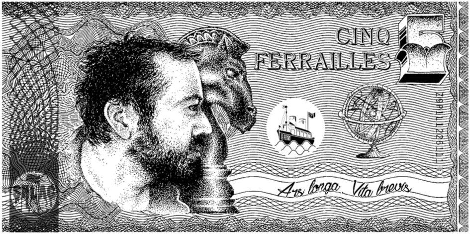
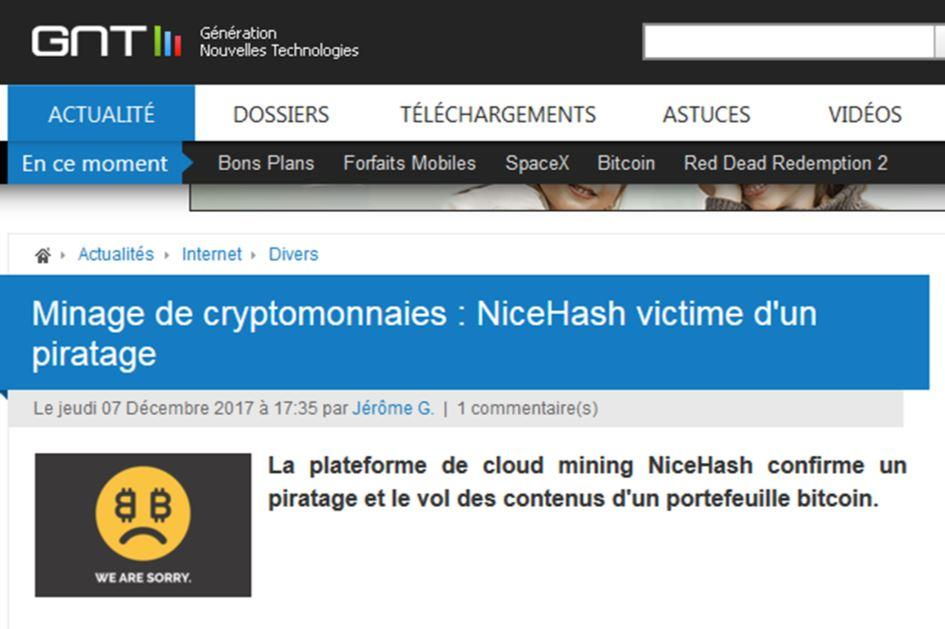
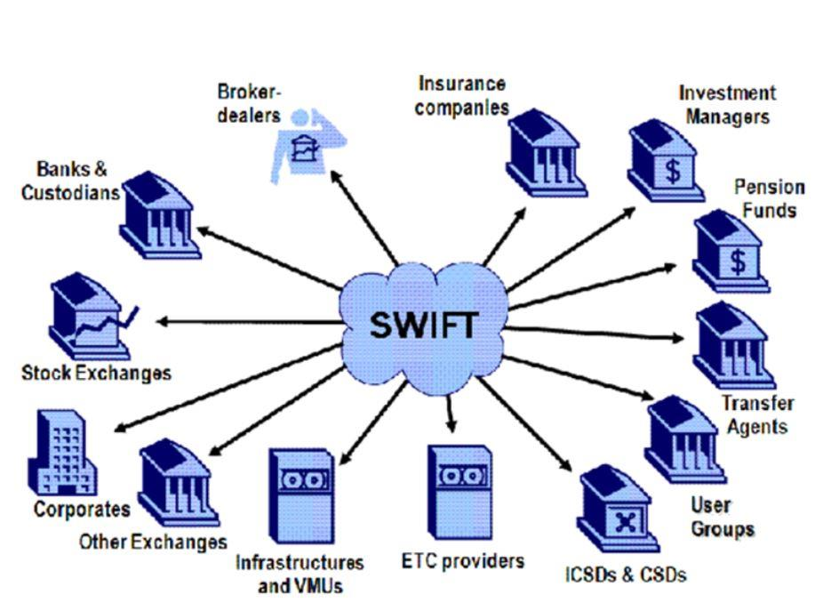

Étude et analyse juridique du concept monétaire et de son évolution.
Le concept de cryptomonnaie ne peut être compris qu’à partir du moment où le concept de monnaie est lui-même établi et compris. La monnaie ne faisant pas suffisamment l’objet d’attentions juridiques, les cryptomonnaies sont, d’une façon générale, laissées à l’entière direction discrétionnaire des seuls et rares banquiers qui maîtrisent de fond en comble le concept monétaire.
MONNAIE ET CRYPTOMONNAIE : QUELQUES PRÉCISIONS TECHNIQUES
Depuis la mise en œuvre systématique en France de la « théorie pure du droit » d’Hans Kelsen, les juristes se sont interdits de réfléchir à la philosophie des techniques juridiques, c’est-à-dire qu’ils se sont interdits de réfléchir aux conséquences sociétales à moyen et long terme des techniques qu’ils utilisent. Il en a résulté que ces techniques, toujours plus subtiles et complexes, sont devenues essentiellement dictées par les contraintes économiques. Autrement dit, les techniques juridiques telles qu’actuellement comprises ne font que mettre en œuvre la volonté hégémonique des banquiers dominants qui organisent et maîtrisent les règles de fonctionnement du système économique. Les juristes sont devenus des « ouvriers du bâtiment », pendant que les économistes en sont les « architectes ». Le « commanditaire du bâtiment » en question, qui se trouve dans les hautes sphères capitalistiques, est quant à lui à la recherche du pouvoir intégral ; dans cet objectif, la monnaie, la règlementation et l’économie lui servent de marchepied.
Ainsi, les juristes sont, au fil du temps, devenus de simples exécutants du « droit » ; ils ont abdiqué, au sein de la Société, leur rôle et leur fonction « d’initiateurs des normes organisationnelles ». Dans ce contexte, il ne faut pas s’étonner que le « droit » suive le « modèle » anglo-saxon dans lequel la norme est une pure règlementation au profit des acteurs économiques dominants. Le « droit » ainsi compris s’apparente de plus en plus à la mise en œuvre d’un ordre commercial supérieur, il n’est plus le garant d’un ordre civil de nature sociétal et civilisationnel.
Le pouvoir politique démocratique ne saurait se passer de l’analyse juridique. Il est donc grand temps que les juristes se réapproprient les tenants et les aboutissants des principes universels de la vie en commun, principes parmi lesquels la monnaie occupe, en tant qu’institution, une place tout à fait centrale, pour ne pas dire prépondérante.
MONNAIE FIDUCIAIRE ET MONNAIE SCRIPTURALE : UN MÊME CONCEPT FRELATÉ
La monnaie telle qu’actuellement conçue tourne en réalité autour de graves incohérences théoriques, ces incohérences ont-elles-mêmes permis et incité de grossières manipulations du concept monétaire au profit des banquiers.
LES INCOHÉRENCES DU CONCEPT MONÉTAIRE
Si l’on analyse le principe qui préside à la création de la monnaie dite fiduciaire1, qui prend la forme de pièces et de billets, on découvre que la distinction avec la monnaie scripturale2, présentée comme le principal problème monétaire, est essentiellement une question de quantité et non de qualité. Pour s’en convaincre, il convient de revenir aux fondamentaux du fonctionnement historique du système monétaire.
L’origine du « système de réserve fractionnaire » a commencé par la pratique de la lettre de change qui a permis aux orfèvres-changeurs de prêter plus d’or qu’ils n’en avaient réellement en réserve dans leurs coffres.
Or, en termes d’évolution grand public, l’héritier de la lettre de change, réservée aux commerçants, est le chèque, qui est une lettre de change non autorisée à circuler au-delà de son destinataire initial (lettre de change non circulante). Le chèque, exemple type de monnaie scripturale, est lui-même une évolution et une sorte de généralisation de la pratique des « lettres de change ».
Les actuels pièces et billets de banque, qui ne sont ni en or ni en argent, sont tout aussi des héritiers de cette pratique consistant, pour les banquiers, à prêter plus d’argent qu’ils n’en ont en réserve. En effet, pièces et billets sont, aujourd’hui et de longue date, fabriqués sans garantie intrinsèque d’être corrélés par une matière première précieuse.
La confiance en les pièces et billets actuellement en circulation (monnaie fiduciaire) est, dans une très large mesure, artificielle dans le sens où elle n’est pas clairement adossée à un bien précieux (or et argent) mais repose en grande partie sur la crédibilité économique de l’État qui les émet. Or, cette crédibilité est aujourd’hui tendancieuse : elle relève plus du rapport de force oligarchique – par le biais du nombre et du dynamisme des multinationales (en particulier des banques) dont le siège social se situe dans l’État considéré – et militaire que de la réalité économique de l’État en question.
Ainsi, alors que les pièces et billets, monnaie fiduciaire, représentent une monnaie matérielle garantie par l’État, il se trouve qu’en réalité ce type de monnaie a la même nature intrinsèque que la monnaie scripturale : ni l’une ni l’autre de ces formes monétaires ne bénéficie d’une quelconque garantie matérielle intrinsèque. La distinction faite entre monnaie fiduciaire et monnaie scripturale induit le raisonnement en erreur (erreur fatale) car cette distinction est davantage une question quantitative que qualitative : la nature fondamentale des deux types de monnaies (fiduciaire ou scripturale) est la même : elle est fondée sur une confiance qui n’est adossée à aucune contrepartie matérielle palpable.
Il en résulte que la distinction entre monnaie fiduciaire et monnaie scripturale masque l’essentiel du problème monétaire réel pour ne concentrer l’attention que sur les manipulations monétaires les plus grossières et les plus évidentes, celles issues de la seule monnaie scripturale. Les monnaies, quelle que soit leur forme, ne sont plus adossées à une valeur matérielle tangible.
Il faut revenir aux fondamentaux qui permettent de voir que les banques, pourtant à l’origine de la conception strictement matérialiste de la monnaie, ont elles-mêmes perverti le concept monétaire matérialiste en dématérialisant cette monnaie.
Il en résulte que la confiance mise dans des monnaies d’État n’est plus assise, adossée, à un, ou même à plusieurs biens matériels, mais à des concepts économiques, aussi fumeux qu’inconstants, du type « PIB » ; rappelons que les Produit Intérieur Brut des pays de l’Union européenne ont récemment introduit dans leur calcul le trafic de drogue et la prostitution, qui est un trafic d’êtres humains3. Ainsi, la confiance en les monnaies d’État, qu’elles soient fiduciaires ou scripturales, est devenue très largement artificielle.
Dans le même temps que se produisait l’évolution décrite ci-dessus, les monnaies ont consciencieusement conservé la caractéristique de « réserve de valeur », qui en fait une « marchandise », un « bien dans le commerce », autrement dit une « devise » sur les marchés.
Ainsi, alors que la monnaie n’est techniquement plus adossée à une confiance inhérente à sa valeur intrinsèque, sur laquelle était assise la conception matérialiste de la monnaie, elle conserve néanmoins les caractéristiques d’une conception strictement matérialiste. C’est précisément cette conception matérialiste de la monnaie, qui rend possible toutes les manipulations, que les banquiers veulent préserver à tout prix. Car cette conception matérialiste de la monnaie permet, in fine, l’appropriation du concept monétaire dans des mains privées.
Les forces économiques dominatrices veulent conserver cachée cette incohérence fondamentale du concept monétaire afin d’éviter tous débats de fonds pouvant aboutir à un changement de paradigme monétaire.
LES MANIPULATIONS GROSSIÈRES ISSUES DE LA MONNAIE SCRIPTURALE
En parlant des manipulations grossières, attardons-nous un instant sur la création monétaire dématérialisée, autrement dit sur la « monnaie scripturale » créée par simple jeu d’écriture comptable par les banques émettrices de crédits (sous forme de prêts). La seule réelle limite à cette capacité monétaire des banques privées à créer de la monnaie réside dans ce qu’il est convenu d’appeler la « réserve fractionnaire », dont le niveau théorique, en forme de pourcentage, est déterminé et contrôlé par les banques centrales. En occident, cette réserve fractionnaire s’apparente à une sorte « d’imposture » en raison de son niveau d’exigence extrêmement faible ; les banques sont quasiment autorisées à créer autant de monnaie qu’elles le veulent. En outre, il s’avère, que, concrètement, ce sont les banques privées elles-mêmes qui définissent le niveau de ce que sera la « réserve fractionnaire » ; elles adaptent en effet elles-mêmes le niveau de crédit qu’elles émettront afin de respecter le pourcentage formel de la « réserve fractionnaire ». Ce ne sont pas les dépôts qui font les crédits mais tout au contraire les crédits qui font les dépôts, c’est-à-dire l’essentiel des actifs bancaires.
Rien de tout cela ne doit surprendre car, par construction, les banques centrales sont des émanations des banques privées. Historiquement, ce sont les banquiers privés qui ont créé et développé le concept de « banque centrale 4 ». Les banquiers privés n’ont actuellement autant qu’historiquement, indépendamment du statut juridique desdites banques centrales (publique ou privée), jamais perdu le contrôle effectif des banques centrales faussement représentées comme des Établissements au service de la collectivité des ressortissants d’un pays. Ces banques se revendiquent d’ailleurs « indépendantes » du pouvoir politique.
D’un point de vue juridique : en matière monétaire et financière, les banquiers sont à la fois juges et partis : ils produisent la monnaie, s’occupent de sa circulation et règlementent les pratiques monétaires. En matière monétaire, nous ne sommes pas sur un terrain politique de type démocratique, nous sommes sur le terrain du « pouvoir absolu », un pouvoir que se sont octroyés, par la ruse, les banquiers et qui est dénué de tout réel contre-pouvoir.
LA NATURE JURIDIQUE CONTRADICTOIRE DE LA MONNAIE N’EST PAS MODIFIÉE PAR LE CONCEPT DE CRYPTOMONNAIE
Le concept monétaire est actuellement subverti par l’ambivalence de la définition, aujourd’hui considérée comme acquise, de la monnaie. La monnaie telle qu’actuellement conçue est définie par une double nature, qui l’empêche d’être opérationnelle d’un point de vue social et civilisationnel.
Le concept de cryptomonnaie non seulement ne résout pas ce problème fondamental de la « nature » problématique de la monnaie mais, tout au contraire, en aggrave les effets anti-civilisationnels par la systématisation de sa dématérialisation.
MONNAIE ET CRYPTOMONNAIE : UNE MÊME NATURE JURIDIQUE CONTRADICTOIRE : À LA FOIS « UNITÉ DE MESURE » ET « RÉSERVE DE VALEUR »
Le problème juridique essentiel de la « monnaie » résulte de sa nature juridique intrinsèque. Actuellement et depuis l’Antiquité (depuis Aristote tel qu’actuellement interprété), la monnaie est définie comme étant une « réserve de valeur ». Dans le contexte matérialiste dans lequel nous vivons, la signification profonde de cette définition est la suivante : en tant que « réserve de valeur », la monnaie est assimilée à un « bien matériel », à une marchandise dans le langage des économistes. Bien que la monnaie soit aujourd’hui très largement dématérialisée, le concept monétaire reste inchangé et la monnaie continue à être considérée comme un « bien », devenu immatériel, mais néanmoins toujours « dans le commerce ».
Or, les connaissances archéologiques révèlent que le concept monétaire a été inventé, non pas pour remplacer le troc (comme cela est fallacieusement traditionnellement enseigné depuis les Lumières afin de le rendre indépendant du pouvoir politique) mais pour servir à fluidifier et simplifier les échanges. Il s’agit bien d’un « concept », et non d’un « bien matériel », qui a été conçu dans l’objectif de faciliter les échanges économiques.
La monnaie est donc, par essence, un « service public » de facilitation des échanges. Juridiquement parlant, la monnaie correspond au concept « d’institution », sa nature étant éminemment, et par essence, politique. Encore faut-il préciser que nous employons le terme « politique » dans son sens sémantique réel, c’est-à-dire dans le sens initial où la « politique » est « l’organisation de la vie de la Cité ».
La monnaie est, par essence, un service rendu à la collectivité par ceux qui contrôlent et dirigent ladite collectivité, en aucun cas un « bien » dans le commerce.
Or, il résulte de la conception purement matérialiste de la monnaie qui prévaut depuis, a minima, le Moyen-Âge, que la monnaie, en tant que « réserve de valeur » est assimilée à un « bien » dans le commerce. Ce bien, matériel du temps des changeurs, est aujourd’hui, notamment en raison des besoins liés à l’avènement d’une « monnaie mondiale », devenu totalement immatériel ; il n’est reste pas moins que la monnaie s’analyse encore aujourd’hui en un « bien », une « marchandise dématérialisée » (sic), sujet de transactions commerciales.
Cette mésinterprétation de la monnaie, conçue comme un bien matériel et non comme un service public, résulte, pour partie, du fait que, traditionnellement (qui n’est pas synonyme d’initialement) les métaux précieux (or et argent) ont été utilisés par les orfèvres-changeurs du Moyen-Âge pour formuler, matérialiser, le concept monétaire ; l’or et l’argent ont été le « vecteur matériel » du concept monétaire. Fondamentalement et conceptuellement, le vecteur utilisé pour faire circuler la monnaie (que ce vecteur soit matériel ou immatériel) est l’une des composantes du concept monétaire ; la monnaie, en tant qu’institution chargée d’un service public, n’est pas réductible à son vecteur matériel.
Ultérieurement, dans le cadre du conflit entre nominalistes et réalistes, et pour réduire le pouvoir politique des princes, la papauté a pris le parti nominaliste de considérer que la valeur de la monnaie était réduite à la valeur du poids de métal précieux qui la composait ; il s’agissait alors de nier la valeur supplémentaire de la monnaie résultant du pouvoir exorbitant qu’il implique pour son émetteur, appelé droit de seigneuriage. Cette prise de position a alimenté, sur le long terme, une conception strictement matérialiste du concept monétaire.
De fil en aiguille, il est devenu de notoriété publique que la « monnaie » était une « réserve de valeur ». En tant que « réserve de valeur », la monnaie acquiert dès lors un statut de « bien » (« marchandise »), susceptible d’être acheté et vendu sur un marché. La monnaie peut donc faire l’objet de transactions commerciales ; elle se trouve aujourd’hui sur les marchés en tant que « devise ». Qui dit « sur le marché » dit aussi, par voie de conséquence, à la fois soumise à « spéculation » et à accaparement.
L’accaparement de l’or et de l’argent a été précisément la technique utilisée par les changeurs du Moyen-Âge pour prendre le contrôle monétaire. Ce contrôle monétaire a entraîné le contrôle du phénomène économique puis politique des États ; il permettra bientôt la disparition du concept d’État, du phénomène politique et, finalement, de la civilisation.
En conclusion, il faut insister sur le phénomène suivant : une monnaie dématérialisée sous forme « d’institution » chargée d’un service public, politiquement dûment contrôlé, ne poserait aucun problème. En d’autres termes, ce n’est pas la forme, matérielle ou immatérielle, de la monnaie qui pose problèmes mais bien le fond de sa définition, qui autorise ou non son contrôle par des intérêts privés.
LE PROBLÈME POLITIQUE FONDAMENTAL POSÉ PAR L’ACTUELLE CONCEPTION MONÉTAIRE
La fonction consistant à « faciliter les échanges » de la monnaie est le fondement de son existence, sa raison d’être initiale. Cette fonction, éminemment sociale, de la monnaie est représentée par le fait qu’elle est une « unité de mesure », autrement dit « une norme sociale ». Or, la caractéristique de « réserve de valeur » de la monnaie est en opposition directe avec sa fonction sociale consistant à faciliter, et par voie de conséquence à développer, les échanges.
Un « bien » qui est objet de spéculation ou d’accaparement ne circule pas, ou circule mal. L’objectif des accapareurs est de raréfier la demande afin de faire augmenter artificiellement les prix du bien en question, en l’occurrence la « monnaie ». Si la monnaie est accaparée, elle devient donc « rare » et ne permet, de façon mécanique, pas d’être utilisée dans tous les échanges. Cette vérité est d’autant plus critique que le niveau des besoins d’échanges d’une société déterminée est élevé.
La spéculation sur la monnaie a pour objectif de modifier artificiellement les cours de la devise en question, soit à la hausse soit à la baisse, dans l’objectif d’obtenir un affaiblissement politique de l’État visé par la manœuvre. Ici encore, il n’est pas question d’améliorer la fluidité des échanges mais d’utiliser la monnaie comme une arme pour affaiblir le phénomène politique.
Une monnaie qui fait l’objet d’accaparement ou de spéculation n’est plus en mesure de remplir le rôle de facilitation des échanges pour lequel elle avait précisément été conçue qui est sa raison d’être et qui correspond à son caractère « d’unité de mesure ».
Autrement exprimé, la monnaie conçue comme une « réserve de valeur » revient à privatiser le concept monétaire, qui devient « propriété des accapareurs et des spéculateurs », ce qui a pour effet mécanique de retirer à la monnaie sa fonction primordiale de « service public ». La monnaie devient en conséquence un moyen politique d’action au profit d’intérêts catégoriels de nature privée. De « service public », la monnaie se transforme en « service privé » à des fins de prise de pouvoir politique. Le concept « politique » perdant lui-même au passage son sens et sa raison d’être puisqu’il n’est plus au service du développement et de l’organisation d’une collectivité déterminée. On comprend ainsi comment la monnaie est devenue un simple instrument de prise de pouvoir politique aux mains des banquiers. On comprend aussi comment, par le biais du contrôle monétaire, le « fait politique » a perdu sa souveraineté pour être intégralement mis au service du « fait économique ».
Pour résumer : les deux caractéristiques juridiques de la monnaie sont incompatibles entre elles, alors que la seconde caractéristique (« réserve de valeur ») a pris le pas sur la première (« unité de mesure »), il en résulte que la monnaie ne peut structurellement plus remplir le rôle de « facilitation des échanges » pour lequel elle avait précisément été conçue. La fonction monétaire a été, pour le plus grand préjudice des peuples, détournée et privatisée.
LE CAS PARTICULIER DES CRYPTOMONNAIES
Les cryptomonnaies sont, par construction, conçues comme des « réserves de valeur » : la valeur d’une cryptomonnaie est celle qui sera discrétionnairement accordée au projet économique sous-jacent par les personnes à l’initiative de l’émission de la cryptomonnaie (les fameuses « ICO 5 »).
Un peu à la façon des actions de sociétés commerciales, cette valeur variera dans le temps au gré de l’offre et de la demande (voir, à titre d’exemple le développement exponentiel de la valeur du Bitcoin depuis son apparition ainsi que ses larges fluctuations depuis). Les cryptomonnaies ont leurs plateformes de marché sur lesquelles elles peuvent librement s’acheter et se revendre.
Or, en l’état actuel des choses, il existe malheureusement des acteurs économiques dominants qui interviennent, de façon active, sur tout type de marchés (notamment celui des devises), pour fausser artificiellement6 la valeur des biens, en l’occurrence celle des monnaies et cryptomonnaies. Par le biais de leurs pratiques, éventuellement concertées, ces acteurs faussent les marchés ; lesquels ne sont absolument plus libres. Pour mémoire, rappelons l’intervention, en septembre 1992, de Georges Soros pour faire tomber la valeur de la livre sterling7, pensons également à la « crise asiatique » de 1997.
Plus récemment, rappelons la raison initiale, début 2010, de la « crise Grecque », très explicitement décrite par Myret Zaki8 comme ayant débuté par une conjonction de mauvaises nouvelles propagées par des agences de notation suivies de l’action concertée de cinq Hedge Funds, dont celui du fameux Soros.
Ainsi, en matière de cryptomonnaies nous cumulons les aléas économiques :
1. À l’aléa résultant de la pertinence de la valorisation initiale de la monnaie en fonction du projet économique sous-jacent ayant justifié « l’ICO » (l’émission de cryptomonnaie), s’ajoute
2. L’aléa lié au risque de spéculation sur les marchés.
S’agissant de cryptomonnaies, nous sommes au surplus dans un cadre totalement virtuel, lié à la capacité des places de marchés ou des fonds à défendre techniquement leur outil contre des hackers, pirates ou corsaires informatiques selon les cas. Ainsi, certaines places de marchés et certains fonds d’investissements en cryptomonnaies ont d’ores et déjà dû fermer pour vol9 et piratage en ligne10.
Bien que cette remarque ne soit pas dirimante11 (le vol de pièces et billets existait également), il faut évidemment prendre en compte le risque technologique lié à la dématérialisation. Alors que, dans le cas des monnaies traditionnelles, la victime du vol disposait de moyens personnels, plus ou moins efficace, pour se prémunir contre ce type de délit, l’utilisation de cryptomonnaies a pour conséquence de départir ses utilisateurs de toute capacité individuelle de prévention d’un tel délit.
La dématérialisation a pour effet de déposséder les individus de tout pouvoir de contrôle effectif sur leurs avoirs monétaires.
DIFFÉRENCE ENTRE CRYPTOMONNAIE D’ÉTAT ET CRYPTOMONNAIE PRIVÉE : LA QUESTION FONDAMENTALE DE LA GARANTIE PUBLIQUE
Lorsque l’on évoque la question des cryptomonnaies, il convient de bien distinguer deux cas de figure, par nature très différents : une cryptomonnaie d’État ne pose, fondamentalement, pas les mêmes problèmes qu’une cryptomonnaie privée. Les deux formes de cryptomonnaies sont néanmoins extrêmement préoccupantes du point de vue de la liberté politique des individus et des peuples.
DÉFINITION ET ANALYSE DE LA CRYPTOMONNAIE D’ÉTAT
Les cryptomonnaies d’État sont en réalité des monnaies publiques sous forme dématérialisée. La différence fondamentale entre une actuelle monnaie étatique et une cryptomonnaie d’État est le vecteur, totalement dématérialisé, utilisé pour la mise en fonction et la circulation de la seconde (cryptomonnaie d’État).
Rappelons qu’aujourd’hui la création et la circulation monétaire (monnaie étatique) se font sous deux formes, distinctes mais cumulatives :
1. Une circulation partiellement matérielle par échange de pièces ou billets (monnaie fiduciaire). L’émission de monnaie fiduciaire, qui fait l’objet d’une création physique, est réalisée par la banque centrale elle-même. Concernant la circulation ultérieure de cette monnaie formalisée sous forme de pièces et billets, elle peut également se faire, lorsqu’elle n’est pas stockée sur des comptes, de façon matérielle par un transfert de mains en mains des pièces et des billets.
2. Une circulation, pour une très large part, dématérialisée (monnaie scripturale), effectuée par un simple jeu d’écriture comptable. Il faut ici préciser qu’en dehors de la question de la création monétaire, matérielle (monnaie fiduciaire) ou immatérielle (monnaie scripturale), les fonds détenus par les particuliers circulent de façon très largement dématérialisée par le simple jeu d’une double écriture comptable (actif-passif). Il en est ainsi depuis que les États ont imposé à leurs ressortissants les règles du jeu posées par les banquiers en imposant que les paiements soient émis sur un compte en banque à partir d’une certaine somme (dont le montant limite est historiquement toujours revu à la baisse).
Une autre différence entre monnaie étatique et cryptomonnaie d’État se situe dans la garantie de confidentialité des données dématérialisées privées incluses dans les chaînes de blocs (blockchains).
Il convient ici de préciser que nous n’évoquons, à ce stade de la discussion, que la circulation monétaire stricto sensu, nous ne parlons ni du problème de la création monétaire, ni des biens matériels ou immatériels qui garantissent la valeur d’une monnaie ou d’une cryptomonnaie c’est-à-dire les éléments sur lesquels ladite monnaie est adossée.
Nous évoquons ici le seul sujet de la forme de la circulation monétaire (partiellement matérielle d’un côté, totalement immatérielle de l’autre) qui différencie la forme monétaire actuelle d’une cryptomonnaie.
L’actuelle monnaie circule sous forme matérielle et immatérielle tandis que les cryptomonnaies ne pourront circuler que sous forme exclusivement dématérialisée. Or, une monnaie dématérialisée permet de tracer la quasi-intégralité des mouvements qui affectent les individus donneurs d’ordre et ces mouvements seront tous collectés par voie électronique (dématérialisée et décentralisée). Sans même évoquer la question du « hackage », se profile celle, essentielle, de la mainmise étatique sur l’affectation concrète de la monnaie : rien ne garantit les personnes utilisatrices d’une monnaie intégralement dématérialisée contre des actes frauduleux et mal intentionnées d’un État aux mains des principaux propriétaires de capitaux.
Derrière la dématérialisation monétaire forcée se trouve la question de la liberté individuelle et de la défense des ressortissants contre des autorités politiques dictatoriales.
LA DIFFÉRENCE FONDAMENTALE ENTRE CRYPTOMONNAIE PRIVÉE ET CRYPTOMONNAIE D’ÉTAT : L’ADOSSEMENT ÉCONOMIQUE
Du point de vue de la garantie sur laquelle repose la monnaie, les cryptomonnaies d’État s’opposent de façon radicale aux cryptomonnaies privées qui, tout en s’adressant à tout type d’utilisateur, ne sont issues que de simples initiatives privées et non du « principe politique » formalisé sous forme d’État.
De ce point de vue, une cryptomonnaie privée n’est économiquement adossée qu’à deux choses extrêmement volatiles et labiles :
1. Le projet économique sous-jacent qui justifie la création monétaire (sur lequel repose la création monétaire) et ;
2. Les aléas de l’offre et de la demande de ladite monnaie, laquelle est, par essence, soumise à spéculation.
Par ailleurs, si une cryptomonnaie d’État s’apparente réellement à une monnaie dans le sens où il s’agit d’un signe monétaire conventionnellement utilisé sur le territoire d’un État et imposé par un pouvoir étatique, il n’en va pas de même des cryptomonnaies privées.
Il convient ici de faire une incise afin de rappeler un phénomène essentiel : en raison de l’appropriation du phénomène monétaire par les banquiers-commerçants, l’État est aujourd’hui très largement devenu une coquille vide, un simple pouvoir apparent chargé de la mise en œuvre des intérêts catégoriels privés des principaux propriétaires de capitaux. Néanmoins, et malgré tout, tant que la caste économique dominante n’a pas vaincu tous les contrepouvoirs et obtenu le pouvoir politique officiel et international total, elle continue à se cacher derrière la fiction juridique étatique. Dans ce contexte, l’État conserve, vis-à-vis de ses ressortissants, une valeur symbolique et organisationnelle fondamentale : il reste chargé de la mission d’organiser la « vie de la Cité », le dynamisme de son économie continuant de servir de garantie à la valeur de sa monnaie. Une cryptomonnaie d’État peut reposer sur les mêmes fondamentaux que les actuelles monnaies étatiques ; à savoir : la détention de « commodities » (métaux et autres biens précieux, matières premières, terres arables ou rares, pétrole, charbon, gaz etc.), le dynamisme de l’économie (nombre et qualité de l’échange de biens et services) et, en dernier recours, la crédibilité militaire de l’État en question.
En termes de garantie, de sous-jacent économique, une cryptomonnaie d’État est donc de même nature que les actuelles monnaies étatiques, elle ne s’en différencie pas de façon fondamentale. La crédibilité politique, et l’utilité publique d’une cryptomonnaie d’État, sont bien supérieures à celles d’une cryptomonnaie privée.
Par ailleurs, une cryptomonnaie d’État fait, comme toute monnaie étatique, l’objet d’un consensus public d’utilisation, ce qui rend très aisé sa circulation sur un territoire déterminé. En tant qu’émetteur de la monnaie ou cryptomonnaie publique, l’autorité politique a donc la charge de garantir la sécurité de la détention de cette monnaie par les particuliers. Il s’agit non seulement de garantir la sécurité de l’émission monétaire mais également la sécurité de la circulation monétaire faite au moyen de transactions (juridiquement qualifiées comme telles). L’État doit ainsi garantir, et sanctionner, les éventuelles pertes liées à des vols ou piratages de la cryptomonnaie d’État sur des marchés dématérialisés ; sur lesquels, rappelons-le, les utilisateurs n’ont aucun contrôle d’aucune sorte.
Ce raisonnement ne vaut, bien entendu, que tant que les États conservent un minimum d’indépendance et de sens politique de défense du « bien commun » et ne sont pas devenus les stricts commanditaires des principaux propriétaires de capitaux. À défaut, nous aurions affaire à des États qui ne sont juridiquement et politiquement que des coquilles vides et qui ne peuvent perdurer qu’en instituant une dictature (au profit de la minorité qui a capté ce pouvoir) ; rien ne permet d’affirmer que de tels États garantiraient d’une quelconque façon des utilisateurs d’une cryptomonnaie d’État spoliés (volontairement ou non).
À l’opposé, une cryptomonnaie privée trouve son origine dans une initiative privée reposant sur un projet quelconque, un peu comme la création d’une entreprise : bien que ne disposant pas de l’agrément conventionnel d’un État, elle s’adresse cependant, par essence, à tout public. Ainsi, une cryptomonnaie privée ne dispose pas, a priori, de la confiance inhérente à une monnaie en tant qu’instrument politique, laquelle est adossée à la crédibilité économique et politique d’un État. La valeur d’une cryptomonnaie privée dépend uniquement de la valeur de son projet d’origine ainsi que de la valeur que des tiers voudront ou non lui accorder sur un marché, ladite valeur étant (on l’a vu plus haut) susceptible de varier d’un moment à l’autre dans des proportions inconnues.
Étant issue d’une initiative strictement privée et n’étant pas obligatoire, l’utilisation d’une cryptomonnaie privée par des particuliers ne saurait être ni garantie par des fonds publics en cas d’échec ou de vol électronique, ni sanctionnée par des règles générales.
Autrement dit, dans la mesure où la cryptomonnaie de nature privée ne fait pas l’objet d’un consensus politique de nature institutionnelle et que son usage n’est pas rendu obligatoire, elle n’est soumise qu’au libre arbitre individuel, chacun ayant le choix d’utiliser ou non une ou plusieurs cryptomonnaies. Dans ce contexte, l’autorité publique et politique n’a aucun devoir envers les utilisateurs des cryptomonnaies privées qui prennent et assument le risque de détention de telles cryptomonnaies.
FONCTION POLITIQUE ET GÉOPOLITIQUE DES CRYPTOMONNAIES D’ÉTAT
Les cryptomonnaies d’État présentent des caractéristiques, assez dangereuses, en termes à la fois géopolitique et politique.
En terme géopolitique : avantage et inconvénient
Du point de vue géopolitique, les cryptomonnaies d’État présentent un avantage de court-terme, plus apparent que réel, et un sérieux inconvénient de moyen et long terme pour les États émetteurs.
Un avantage géopolitique de court-terme, plus apparent que réel
Le premier et immédiat avantage des cryptomonnaies d’État serait de court-circuiter le réseau Swift dans les échanges internationaux ; ce qui, de façon immédiate, opèrerait une libération des États sous sanction ou embargo. Les États utilisant une cryptomonnaie étatique ne seraient plus contraints de passer par les fourches caudines du réseau Swift actuellement encore en quasi-monopole12 dans le traitement bancaire des échanges internationaux.
De ce point de vue, l’arrivée des cryptomonnaies étatiques permettrait un retour géopolitique des États en lutte contre les organismes privés en situation de monopole dans la circulation monétaire internationale. Cela occasionnerait un certain rééquilibrage dans la concurrence entre États et organismes privés.
Toutefois, il ne faut pas surestimer cet avantage concurrentiel.
D’une part, certains grands États, comme la Chine et la Russie, semblent enfin disposés à mettre en œuvre des réseaux internationaux concurrents de Swift. Les entreprises et les échanges internationaux ne seraient alors plus obligés de passer par Swift. Il n’en reste pas moins que ce marché des transactions bancaires internationales resterait de type oligopolistique. Si Swift perdait son monopole, les échanges des petits États devraient obligatoirement passer par son ou leur concurrent(s) contrôlé(s) par d’autres grands États. Tout danger d’embargo n’est donc pas forcément écarté par la création d’un ou deux réseaux concurrents à Swift.
D’autres part, telles que les choses se profilent, ce ne sont pas les États au sens politique du terme, et donc les ressortissants des États, qui tireraient profit de la généralisation de l’usage des cryptomonnaies mais bien au contraire les banquiers qui sont à la manœuvre et qui veulent, coûte que coûte, imposer une monnaie mondiale de type Bancor sous la forme des DTS (panier de monnaie) en remplacement du dollar américain (ce dernier ayant apporté la preuve de son incapacité à gérer l’intégralité des échanges internationaux).
Il faut en effet garder à l’esprit que les individus qui se cachent derrière les banques et autres organismes bancaires centralisés sont des individus à la solde, stipendiés, des « dominants économiques » qui veulent imposer une monnaie mondiale. Or ce sont précisément ces individus et ces organismes (FMI/IMF, Banque des Règlements Internationaux dite BRI/BIS…) qui organisent le passage en douceur des monnaies étatiques à des cryptomonnaie d’État. Les États pourraient, à terme, être contraints de transformer leurs monnaies locales en cryptomonnaies afin de traduire leurs avoirs en DTS (monnaie mondiale). Autrement dit, les États seraient contraints, afin de pouvoir continuer à pratiquer les échanges internationaux, à transformer leur monnaie en cryptomonnaie. C’est précisément dans cet objectif que se développe actuellement, de façon accélérée, le protocole XRP-Ripple.
La souveraineté et même le simple choix de la forme monétaire échapperait dès lors définitivement au « fait politique », juridiquement traduit sous forme d’État.
Un inconvénient géopolitique majeur de long-terme
Les États qui ne maîtrisent pas
1. Les ressources informatiques suffisantes pour sécuriser techniquement leurs transactions vis-à-vis des utilisateurs nationaux et étrangers et,
2. De la réserve d’énergie suffisante pour alimenter l’utilisation de leur « cryptomonnaies », se retrouveront de facto à la merci des États dominants ces deux domaines stratégiques.
Ces types de contraintes, à la fois techniques et énergétiques, sur la monnaie emporteront définitivement le concept politique d’État, qui suppose l’autodétermination des peuples à disposer d’eux-mêmes. La technocratie prendra la place de l’actuelle bureaucratie dans la gestion politique des peuples ; dans le même temps que nous franchirons, collectivement, un pas de plus vers la contrainte politique exercée par les banquiers-commerçants sur le phénomène étatique.
EN TERME POLITIQUE, UN GRAVE ET DURABLE EFFET NÉGATIF : LA CONFIRMATION DE LA TRANSFORMATION POLITIQUE DE L’ORDRE JURIDIQUE INTERNATIONAL ET DE LA DISPARITION DU CONCEPT DE CIVILISATION
D’un point de vue économique, il existe pour les usagers assez peu de différence entre les actuelles monnaies et les cryptomonnaies d’État du point de vue de la garantie économique et politique (la garantie économique est techniquement la même : « commodities » (or, métaux précieux ou rares, terres arables et terres rares), vigueur économique et politique du pays en question…).
Il existe, en revanche, pour les ressortissants de l’État en question, un grave danger politique à la transformation d’une monnaie d’État en cryptomonnaie d’État. En effet, cette transformation a pour effet immédiat et rédhibitoire la disparition des « espèces », couramment appelées « monnaie fiduciaire ».
Par cette disparition, les individus perdent tout contrôle direct dans la circulation effective de leurs avoirs monétaires et, pire, peuvent être soumis au bon vouloir des technocrates capables d’agir sur le protocole dématérialisé ; ces technocrates pouvant d’ailleurs être ou non à la solde desdits États (l’analogie avec la différence entre pirate et corsaires s’impose).
Par ailleurs, les chaînes de blocs, qui stockent toutes les données des utilisateurs liées aux transactions, ne peuvent en aucune façon ni garantir l’anonymat desdits utilisateurs ni leurs éventuelles utilisations ultérieures à d’autres fins. Toutes ces données se trouvent de facto régies par le principe anglo-saxon du « droit de propriété économique » ; les protocoles informatiques de transfert de données se trouvent en état de pouvoir disposer de ces données sans le moindre accord des utilisateurs concernés. Or, les organismes les plus demandeurs de ce type d’informations sont les centres de recherche sur l’intelligence artificielle. Les cryptomonnaies seront, par un effet collatéral, de grands pourvoyeurs du développement des projets d’intelligence artificielle, dans lesquels il est loin d’être démontré que l’intérêt direct du public est exclusivement pris en compte.
L’utilisation à long terme des cryptomonnaies d’État, par la disparition des espèces et le contrôle intégral des données des utilisateurs, génère de façon mécanique une atteinte létale aux libertés publiques ainsi qu’un grave recul du concept « politique ».
Si l’on ajoute le fait que les États perdraient, avec la généralisation des cryptomonnaies, définitivement la main sur leur forme monétaire, la généralisation et la banalisation de l’utilisation des cryptomonnaies étatiques pourrait acter (actera si personne ne réagit) un pas décisif vers le gouvernement mondial dictatorial aux ordres des banquiers-commerçants.
IDENTIFICATION DES VRAIS ET FAUX DANGERS DES CRYPTOMONNAIES
Nous ne reviendrons pas ici sur la caractéristique de « réserve de valeur », qui a pour conséquence mécanique que toute cryptomonnaie est, comme toute monnaie, un « bien dans le commerce » (une marchandise dans le langage des économistes). Insistons quand même sur le fait que cette caractéristique monétaire induit la plus grave dérive monétaire : celle qui transforme le « service public » de la monnaie en outil de prise de pouvoir politique aux mains des principaux propriétaires de capitaux. En effet, en tant que « bien dans le commerce », la monnaie devient, de facto, soumise aux deux ennemis de la civilisation que sont les spéculateurs et les accapareurs.
Nous détaillerons en revanche ci-dessous les dangers juridiques, politiques et géopolitiques, qui se cachent derrière la généralisation
1. Des cryptomonnaies privées et
2. Des cryptomonnaies étatiques.
Concernant les cryptomonnaies privées
S’agissant des cryptomonnaies privées, s’il existe une crainte de corruption artificiellement mise en avant, il existe en revanche, de vrais dangers économique et politique à leur utilisation.
Une crainte fictive trop souvent mise en avant : l’utilisation de cryptomonnaies privées pour effectuer et cacher des trafics illégaux
Malheureusement, les opérations mafieuses, clandestines et illicites n’ont pas attendu les cryptomonnaies pour prospérer et être financées. Ces financements préexistent largement aux cryptomonnaies et sont liés à l’existence :
De l’anonymat des capitaux ;
Des paradis fiscaux (qui découlent de l’anonymat des capitaux) et ;
De l’accaparement de la gestion monétaire par les banques et autres multinationales à vocation financière qui ont assis leur développement sur l’opacité, l’asymétrie d’information, autant que sur l’asymétrie entre pouvoir et responsabilité ; autant d’asymétries qui ont, à leur tour, permis l’accaparement des richesses et des institutions politique par les banquiers.
Au surplus, il faut insister sur le fait que l’anonymat technique des cryptomonnaies est très relatif : il ne résiste pas à une volonté ferme des pouvoirs publics officiels et/ou des agences de renseignements. L’anonymat en question n’est vrai que pour les individus isolés qui n’ont pas les moyens techniques et matériels d’aller chercher les informations cachées dans les blocs de chaînes.
L’anonymat des cryptomonnaies cède en revanche devant les agences de renseignements étatiques ainsi que devant les informaticiens chevronnés maîtrisant ces techniques de programmation.
Au surplus, l’anonymat techniquement permis par les cryptomonnaies est, dans le contexte actuel de contrôle capitalistique par les élites économiques, beaucoup moins efficace que l’anonymat des capitaux, qui a, au fil des siècles, largement fait la preuve (et même au-delà) de son efficacité.
L’anonymat des cryptomonnaies n’existe vraiment que pour les gens ordinaires. Il n’existe pas pour les détenteurs du « fait économique » qui ont aujourd’hui pris un pouvoir de type monopolistique sur toutes les organisations politiques, au niveau local, national et international. Cet anonymat, consciencieusement organisé, ne joue jamais en faveur des gens ordinaires, il joue de façon systématique, systémique, en faveur des seuls détenteurs du pouvoir.
Quoiqu’il en soit, le financement opaque des opérations illicites, illégales et socialement destructrices ne sera pas mieux ni plus aisément assuré par les cryptomonnaies privées qu’il ne l’est actuellement par l’opacité des capitaux et des places financières paradisiaques.
UN RÉEL DANGER ÉCONOMIQUE : L’INCERTITUDE ABSOLUE SUR LA VALEUR INTRINSÈQUE DES CRYPTOMONNAIES PRIVÉES
S’il existe des faux dangers, tel l’anonymat, absurdement mis en avant, il existe également de véritables risques économiques liés à l’utilisation de cryptomonnaies. En particulier, ces monnaies privées sont sujettes à une double insécurité économique liée :
1. À l’incertitude sur la valeur réelle de la monnaie en question et,
2. À la faible assise économique concrète de ces monnaies émises en relation avec un projet économique particulier (un peu comme des actions sont émises pour financer un projet d’entreprise).
Ce dernier problème ne concerne évidemment pas les cryptomonnaies d’État adossées à des richesses étatiques.
Par ailleurs, la prolifération des cryptomonnaies privées a pour effet un éclatement de la monnaie en de multiples entités ce qui, à son tour, a pour conséquence de limiter les possibilités d’échange de marchandises.
Pour que les détenteurs d’une cryptomonnaie acceptent d’autres cryptomonnaies de façon indifférenciée, il faut que toutes ces cryptomonnaies aient :
1. La même valeur pour leurs usagers ou,
2. Soient évaluées les unes par rapport aux autres de façon permanente (à la mesure des variations de valeurs des unes et des autres !).
Le problème est justement que toutes les cryptomonnaies ont des valeurs différentes et ne sont absolument pas échangeables à valeur égale, pour trois raisons :
1. Étant une réserve de valeur, c’est-à-dire une marchandise, ces monnaies sont soumises aux lois du marché ;
2. Chaque cryptomonnaie est assise, au départ, sur une réalité matérielle différente de celle des autres et,
3. L’évaluation de ces monnaies est largement intrinsèquement dépendante du nombre de leurs « mineurs » (bitcoin) ou « forgeurs » (ether).
Ces disparités posent, fondamentalement, la question de la nature et du degré de confiance – il est ici question de légitimité – que l’on peut porter à une monnaie qui est adossée à la seule capacité technique de transmission informatique de données.
Un autre problème économique réel provient de l’éclatement du concept monétaire puisque les cryptomonnaies, qui s’apparentent à des monnaies privées sont, par hypothèses, extrêmement nombreuses. Or, la fluidité des échanges suppose la minimisation des risques de change entre les différentes monnaies en circulation ainsi qu’a minima une utilisation normalisée de la monnaie, d’où la nécessité d’une centralisation de la gestion monétaire. Rappelons toutefois, qu’il ne faut pas confondre la nécessité de la centralisation de la gestion monétaire avec sa gestion dans des mains privées, par des banquiers, situation que nous connaissons aujourd’hui.
Pour être efficace à remplir son rôle de facilitateur d’échange, la monnaie doit être conçue comme un « service public » c’est-à-dire un service destiné à tous ses usagers. La gestion monétaire par des banques centrales, elles-mêmes aux mains des banquiers (principaux capitalistes), est le contraire exact d’une saine gestion monétaire ; ce type de gestion ne diffère pas fondamentalement de la gestion de monnaies privées obtenues par des moyens cryptographiques : on reste dans le cadre de monnaies gérées par des personnes privées. Or, afin de garantir son rôle de facilitateur d’échanges, la monnaie doit être homogène et gérée par une entité politique dont le rôle est l’organisation de la vie collective (ce que ne sont plus les États pour la grande majorité d’entre eux).
UN RÉEL DANGER POLITIQUE : LA PERTE DE CONTRÔLE DES INDIVIDUS SUR LEURS VIE, UNE DISPARITION DE TOUTE LIBERTÉ PUBLIQUE
Quoiqu’il en soit, l’avènement d’une monnaie sous forme totalement dématérialisée opère une perte de contrôle des individus sur leurs avoirs monétaires. Les utilisateurs de telles monnaies ne contrôlent pas plus la quantité effective de leurs avoirs, sujets aux pirates et corsaires de tous horizons. Ils ne maîtrisent plus non plus les données personnelles qui accompagnent les transactions monétaires qu’ils effectuent ; ces données seront utilisées, sans consentement des utilisateurs de cryptomonnaies et même sans la conscience de leur utilisation, à des fins commerciales ou, pire, à des fins de recherche sur l’intelligence artificielle au profit de ceux qui financent ces recherches (les principaux propriétaires de capitaux de la planète).
Les individus perdent la capacité à gérer leur vie de façon autonome, ils deviennent des pions dans un jeu dont ils ne maîtrisent plus les règles.
Par ailleurs, une analyse exhaustive de la succession des évènements au niveau international amène nécessairement au questionnement suivant : l’absence d’interdiction étatique et la multiplication de l’exposition médiatique des cryptomonnaies privées entreraient-elle dans la stratégie des grands banquiers consistant à banaliser, dans le public, l’utilisation de la monnaie dématérialisée pour, à terme, imposer partout sur la planète le concept monétaire intégralement dématérialisé ? Nous aurions alors franchi le cap d’une régression létale des libertés publiques qui ne peut que plaire aux partisans d’un gouvernement mondial dictatorial.
Cette régression va de pair avec la « marchandisation » des principes de régulation de la vie en commun, les principes du droit commercial devenant le « droit commun ». Cette évolution s’accompagne mécaniquement de la disparition du droit continental traditionnel, issu des principes du droit romain, qui avait précisément pour objet de réguler la « vie en société » en limitant les appétits catégoriels par la définition et la protection de « biens communs » supérieurs à tout intérêt de type privé. La prédation de la sphère juridique par le « droit » anglo-saxon, qu’il faut comprendre comme de la simple « règlementation au profit des plus puissants détenteurs de capitaux », est synonyme de disparition du concept de « civilisation ».
CONCERNANT LES CRYPTOMONNAIES D’ÉTAT
Les cryptomonnaies ont, par essence, les mêmes problèmes que ceux que nous connaissons avec les monnaies actuelles. Il faut, pour se défaire de ces difficultés, accepter de repenser de fond en comble le rôle de la monnaie et revenir aux raisons d’être de son apparition. Il ne s’agit de s’interroger sur la « nature » de la monnaie et non seulement sur sa « forme ». Comme les actuelles monnaies, les cryptomonnaies ne posent pas tant un problème de forme, car nous vivons déjà, largement, sous l’aire de la monnaie privée dématérialisée, qu’un problème de nature.
Les cryptomonnaies d’État ne sont juridiquement pas différentes des monnaies d’État en raison de la permanence de leur caractéristique fondamentale de « réserve de valeur ». Elles s’analysent plutôt comme étant une « évolution » des actuelles monnaies. Évolution qui permettra un double pas en avant pour les banquiers : d’une part l’arrivée de la monnaie mondiale du type « Bancor » et d’autre part la disparition des espèces et la dépossession des individus sur le contrôle de leurs avoirs monétaires.
LA QUESTION STRATÉGIQUE DU CONTRÔLE MONÉTAIRE PAR LES BANQUIERS (PRINCIPAUX PROPRIÉTAIRES DE CAPITAUX)
La question du contrôle des cryptomonnaies par les banquiers dominants est tout à fait stratégique car elle préfigure ce que sera la future monnaie mondiale. Peu importe la forme que prend la « monnaie », matérielle ou dématérialisée, ce qui importe est la question de son statut juridique. Or, en tant que « réserve de valeur », les cryptomonnaies sont structurellement des marchandises objet de tractations commerciales. Or, répétons-le, tout « bien » dans le commerce est soumis à spéculation et à accaparement13.
D’un point de vue stratégique, tout porte à croire que les cryptomonnaies privées ont été lancées (il faut ici comprendre : « ont été autorisées par les autorités publiques ») dans le public en tant que « ballon d’essai », pour faire croire à une liberté monétaire fictive avant que celle-ci ne soit définitivement supprimée par le biais de règlementations14. Ce ballon d’essai avait pour autre intérêt d’habituer le public à la dématérialisation monétaire de façon à ce que ce dernier soit demandeur de « dématérialisation monétaire », perçue par beaucoup comme une « simplification » de la vie courante.
Ainsi, les individus seront eux-mêmes demandeurs des chaînes qui les lieront définitivement. Un cas d’école de manipulation des masses par les banquiers : faire en sorte que les individus réclament leur propre esclavage.
Seules subsisteront, en dernier recours, les cryptomonnaies d’État, à qui les banquiers réservent le plus grand avenir14.
LA DISPARITION DU CONCEPT POLITIQUE D’ÉTAT
La monnaie mondiale est le premier pas vers le gouvernement mondial, lequel se passe tout à fait du concept d’État. Dans le nouvel ordre mondial (NOM/NWO) imaginé par les banquiers, les États ne sont plus des structures politiques mais de simples relais de transmission de directives venues du gouvernement centralisé au niveau mondial. Ces États ne doivent être ni de trop grande taille ni trop puissants car ils seraient alors un potentiel contrepouvoir au gouvernement central. D’où la nécessité de soumettre les États au pouvoir supérieur des multinationales qui contrôlent effectivement les différentes économies locales ; c’est dans cette réalité que nous vivons actuellement.
Aujourd’hui, le concept d’État est subverti, il n’a plus guère de sens politique car il ne dispose plus de la souveraineté, laquelle inclus, et même commence par, la souveraineté monétaire. Les États occidentaux d’aujourd’hui sont de simples coquilles juridiques vides de tout sens politique. L’avènement de la monnaie mondiale sous forme de panier de monnaies dématérialisées gérées par un système informatique de chaînes de blocs (blockchains), plus ou moins sécurisé sera le premier pas vers la nécessité du « gouvernement mondial ». Car il ne faut pas perdre de vue le principe fondamental qui veut qu’à une économie mondiale artificielle correspond une « monnaie mondiale » (tout aussi artificiellement créée) et enfin, un gouvernement mondial qui chapeaute toute cette construction.
La transmission informatique des données monétaires, au sens large puisque ces données incluent des informations personnelles aux parties, aux transactions, est opaque pour les individus isolés mais au contraire tout à fait transparent pour les « services » reliés aux États. L’anonymat procuré par les cryptomonnaies est donc très relatif, il se compose d’un deux poids deux mesure selon que vous êtes du côté des États, lesquels, rappelons-le, sont sous le joug et le contrôle des grands propriétaires de capitaux, ou du côté des particuliers.
Selon cette conception de l’organisation sociale, les ressortissants des États et les États eux-mêmes ne sont que des faire-valoir de la puissance économique, ils sont utilisés comme des pions tant qu’ils conservent un intérêt pour les dominants et seront impitoyablement éliminés lorsque cet intérêt aura disparu.
Si l’humanité veut retrouver le chemin de la civilisation, synonyme de développement durable pour l’humanité, il lui faut impérativement reprendre le contrôle de la monnaie et réinvestir les institutions politiques qui organisent la Société. Ni les actuelles monnaies étatiques, ni les cryptomonnaies d’État ne permettront de reprendre ce chemin, tant du moins qu’elles resteront sous le contrôle strict des banquiers-commerçants.

Partager cette page